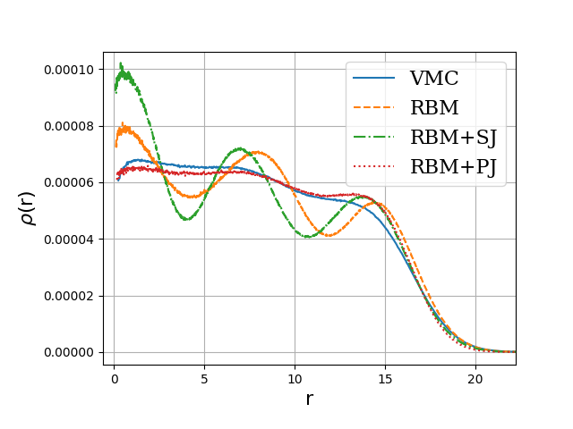

The main emphasis is to give you a short and pedestrian introduction to the whys and hows we can use (with several examples) machine learning methods in nuclear physics. And why this could (or should) be of interest.
These slides are at https://mhjensenseminars.github.io/MachineLearningTalk/doc/web/overview.html. Scroll down the page.
Jane Kim (MSU), Julie Butler (MSU), Patrick Cook (MSU), Danny Jammooa (MSU), Daniel Bazin (MSU), Dean Lee (MSU), Witek Nazarewicz (MSU), Michelle Kuchera (Davidson College), Even Nordhagen (UiO), Robert Solli (UiO, Expert Analytics), Bryce Fore (ANL), Alessandro Lovato (ANL), Stefano Gandolfi (LANL), and Giuseppe Carleo (EPFL). Excuses to those I have omitted.

If you wish to have a critical read on AI/ML from a societal point of view, see Kate Crawford's recent text Atlas of AI
Here: with AI/ML we intend a collection of machine learning methods with an emphasis on statistical learning and data analysisAn important and emerging field is what has been dubbed as scientific ML, see the article by Deiana et al Applications and Techniques for Fast Machine Learning in Science, arXiv:2110.13041
The authors discuss applications and techniques for fast machine learning (ML) in science – the concept of integrating power ML methods into the real-time experimental data processing loop to accelerate scientific discovery. The report covers three main areas
Machine learning is an extremely rich field, in spite of its young age. The increases we have seen during the last three decades in computational capabilities have been followed by developments of methods and techniques for analyzing and handling large date sets, relying heavily on statistics, computer science and mathematics. The field is rather new and developing rapidly.
Popular software packages written in Python for ML are
and more. These are all freely available at their respective GitHub sites. They encompass communities of developers in the thousands or more. And the number of code developers and contributors keeps increasing.
Not all the algorithms and methods can be given a rigorous mathematical justification, opening up thereby for experimenting and trial and error and thereby exciting new developments.
A solid command of linear algebra, multivariate theory, probability theory, statistical data analysis, optimization algorithms, understanding errors and Monte Carlo methods is important in order to understand many of the various algorithms and methods.
Job market, a personal statement: A familiarity with ML is almost becoming a prerequisite for many of the most exciting employment opportunities. And add quantum computing and there you are!
The approaches to machine learning are many, but are often split into two main categories. In supervised learning we know the answer to a problem, and let the computer deduce the logic behind it. On the other hand, unsupervised learning is a method for finding patterns and relationship in data sets without any prior knowledge of the system. Some authours also operate with a third category, namely reinforcement learning. This is a paradigm of learning inspired by behavioural psychology, where learning is achieved by trial-and-error, solely from rewards and punishment.
Another way to categorize machine learning tasks is to consider the desired output of a system. Some of the most common tasks are:
The large amount of degrees of freedom pertain to both theory and experiment in nuclear physics. With increasingly complicated experiments that produce large amounts data, automated classification of events becomes increasingly important. Here, deep learning methods offer a plethora of interesting research avenues.
Almost every problem in ML and data science starts with the same ingredients:
We seek to minimize the function \( \mathcal{C} (\mathbf{x}, f(\mathbf{\alpha})) \) by finding the parameter values which minimize \( \mathcal{C} \). This leads to various minimization algorithms. It may surprise many, but at the heart of all machine learning algortihms there is an optimization problem.
Representations of two events from the Argon-46 experiment. Each row is one event in two projections, where the color intensity of each point indicates higher charge values recorded by the detector. The bottom row illustrates a carbon event with a large fraction of noise, while the top row shows a proton event almost free of noise.

Given a hamiltonian \( H \) and a trial wave function \( \Psi_T \), the variational principle states that the expectation value of \( \langle H \rangle \), defined through
$$ \langle E \rangle = \frac{\int d\boldsymbol{R}\Psi^{\ast}_T(\boldsymbol{R})H(\boldsymbol{R})\Psi_T(\boldsymbol{R})} {\int d\boldsymbol{R}\Psi^{\ast}_T(\boldsymbol{R})\Psi_T(\boldsymbol{R})}, $$is an upper bound to the ground state energy \( E_0 \) of the hamiltonian \( H \), that is
$$ E_0 \le \langle E \rangle. $$In general, the integrals involved in the calculation of various expectation values are multi-dimensional ones. Traditional integration methods such as the Gauss-Legendre will not be adequate for say the computation of the energy of a many-body system. Basic philosophy: Let a neural network find the optimal wave function
Machine Learning and the Deuteron by Kebble and Rios and Variational Monte Carlo calculations of \( A\le 4 \) nuclei with an artificial neural-network correlator ansatz by Adams et al.
Adams et al: $$ \begin{align} H_{LO} &=-\sum_i \frac{{\vec{\nabla}_i^2}}{2m_N} +\sum_{i < j} {\left(C_1 + C_2\, \vec{\sigma_i}\cdot\vec{\sigma_j}\right) e^{-r_{ij}^2\Lambda^2 / 4 }} \nonumber\\ &+D_0 \sum_{i < j < k} \sum_{\text{cyc}} {e^{-\left(r_{ik}^2+r_{ij}^2\right)\Lambda^2/4}}\,, \label{_auto1} \end{align} $$where \( m_N \) is the mass of the nucleon, \( \vec{\sigma_i} \) is the Pauli matrix acting on nucleon \( i \), and \( \sum_{\text{cyc}} \) stands for the cyclic permutation of \( i \), \( j \), and \( k \). The low-energy constants \( C_1 \) and \( C_2 \) are fit to the deuteron binding energy and to the neutron-neutron scattering length
An appealing feature of the neural network ansatz is that it is more general than the more conventional product of two- and three-body spin-independent Jastrow functions
$$ \begin{align} |\Psi_V^J \rangle = \prod_{i < j < k} \Big( 1-\sum_{\text{cyc}} u(r_{ij}) u(r_{jk})\Big) \prod_{i < j} f(r_{ij}) | \Phi\rangle\,, \label{_auto2} \end{align} $$which is commonly used for nuclear Hamiltonians that do not contain tensor and spin-orbit terms. The above function is replaced by a four-layer Neural Network.


The Hamiltonian of the quantum dot is given by
$$ \hat{H} = \hat{H}_0 + \hat{V}, $$where \( \hat{H}_0 \) is the many-body HO Hamiltonian, and \( \hat{V} \) is the inter-electron Coulomb interactions. In dimensionless units,
$$ \hat{V}= \sum_{i < j}^N \frac{1}{r_{ij}}, $$with \( r_{ij}=\sqrt{\mathbf{r}_i^2 - \mathbf{r}_j^2} \).
This leads to the separable Hamiltonian, with the relative motion part given by (\( r_{ij}=r \))
$$ \hat{H}_r=-\nabla^2_r + \frac{1}{4}\omega^2r^2+ \frac{1}{r}, $$plus a standard Harmonic Oscillator problem for the center-of-mass motion. This system has analytical solutions in two and three dimensions (M. Taut 1993 and 1994).



A good read on folding/unfolding is An Unfolding Method for High Energy Physics Experiments by Volker Blobel
See notebook details and examples of simple data reconstructed with Gaussian processes.
Predictions made with eleven global mass model and Bayesian model averaging

Given a hamiltonian \( H \) and a trial wave function \( \Psi_T \), the variational principle states that the expectation value of \( \langle H \rangle \), defined through
$$ \langle E \rangle = \frac{\int d\boldsymbol{R}\Psi^{\ast}_T(\boldsymbol{R})H(\boldsymbol{R})\Psi_T(\boldsymbol{R})} {\int d\boldsymbol{R}\Psi^{\ast}_T(\boldsymbol{R})\Psi_T(\boldsymbol{R})}, $$is an upper bound to the ground state energy \( E_0 \) of the hamiltonian \( H \), that is
$$ E_0 \le \langle E \rangle. $$In general, the integrals involved in the calculation of various expectation values are multi-dimensional ones. Traditional integration methods such as the Gauss-Legendre will not be adequate for say the computation of the energy of a many-body system.
Choose a trial wave function \( \psi_T(\boldsymbol{R}) \).
$$ P(\boldsymbol{R},\boldsymbol{\alpha})= \frac{\left|\psi_T(\boldsymbol{R},\boldsymbol{\alpha})\right|^2}{\int \left|\psi_T(\boldsymbol{R},\boldsymbol{\alpha})\right|^2d\boldsymbol{R}}. $$This is our model, or likelihood/probability distribution function (PDF). It depends on some variational parameters \( \boldsymbol{\alpha} \). The approximation to the expectation value of the Hamiltonian is now
$$ \langle E[\boldsymbol{\alpha}] \rangle = \frac{\int d\boldsymbol{R}\Psi^{\ast}_T(\boldsymbol{R},\boldsymbol{\alpha})H(\boldsymbol{R})\Psi_T(\boldsymbol{R},\boldsymbol{\alpha})} {\int d\boldsymbol{R}\Psi^{\ast}_T(\boldsymbol{R},\boldsymbol{\alpha})\Psi_T(\boldsymbol{R},\boldsymbol{\alpha})}. $$$$ E_L(\boldsymbol{R},\boldsymbol{\alpha})=\frac{1}{\psi_T(\boldsymbol{R},\boldsymbol{\alpha})}H\psi_T(\boldsymbol{R},\boldsymbol{\alpha}), $$
called the local energy, which, together with our trial PDF yields
$$ \langle E[\boldsymbol{\alpha}] \rangle=\int P(\boldsymbol{R})E_L(\boldsymbol{R},\boldsymbol{\alpha}) d\boldsymbol{R}\approx \frac{1}{N}\sum_{i=1}^NE_L(\boldsymbol{R_i},\boldsymbol{\alpha}) $$with \( N \) being the number of Monte Carlo samples.
We want to perform a Variational Monte Carlo calculation of the ground state of two electrons in a quantum dot well with different oscillator energies, assuming total spin \( S=0 \). Our trial wave function has the following form
$$ \begin{equation} \psi_{T}(\boldsymbol{r}_1,\boldsymbol{r}_2) = C\exp{\left(-\alpha_1\omega(r_1^2+r_2^2)/2\right)} \exp{\left(\frac{r_{12}}{(1+\alpha_2 r_{12})}\right)}, \label{eq:trial} \end{equation} $$where the variables \( \alpha_1 \) and \( \alpha_2 \) represent our variational parameters.
Why does the trial function look like this? How did we get there? This is one of our main motivations for switching to Machine Learning.
To find an ansatz for the correlated part of the wave function, it is useful to rewrite the two-particle local energy in terms of the relative and center-of-mass motion. Let us denote the distance between the two electrons as \( r_{12} \). We omit the center-of-mass motion since we are only interested in the case when \( r_{12} \rightarrow 0 \). The contribution from the center-of-mass (CoM) variable \( \boldsymbol{R}_{\mathrm{CoM}} \) gives only a finite contribution. We focus only on the terms that are relevant for \( r_{12} \) and for three dimensions. The relevant local energy operator becomes then (with \( l=0 \))
$$ \lim_{r_{12} \rightarrow 0}E_L(R)= \frac{1}{{\cal R}_T(r_{12})}\left(-2\frac{d^2}{dr_{ij}^2}-\frac{4}{r_{ij}}\frac{d}{dr_{ij}}+ \frac{2}{r_{ij}}\right){\cal R}_T(r_{12}). $$In order to avoid divergencies when \( r_{12}\rightarrow 0 \) we obtain the so-called cusp condition
$$ \frac{d {\cal R}_T(r_{12})}{dr_{12}} = \frac{1}{2} {\cal R}_T(r_{12})\qquad r_{12}\to 0 $$The above results in
$$ {\cal R}_T \propto \exp{(r_{ij}/2)}, $$for anti-parallel spins and
$$ {\cal R}_T \propto \exp{(r_{ij}/4)}, $$for anti-parallel spins. This is the so-called cusp condition for the relative motion, resulting in a minimal requirement for the correlation part of the wave fuction. For general systems containing more than say two electrons, we have this condition for each electron pair \( ij \).
To find the derivatives of the local energy expectation value as function of the variational parameters, we can use the chain rule and the hermiticity of the Hamiltonian.
Let us define (with the notation \( \langle E[\boldsymbol{\alpha}]\rangle =\langle E_L\rangle \))
$$ \bar{E}_{\alpha_i}=\frac{d\langle E_L\rangle}{d\alpha_i}, $$as the derivative of the energy with respect to the variational parameter \( \alpha_i \) We define also the derivative of the trial function (skipping the subindex \( T \)) as
$$ \bar{\Psi}_{i}=\frac{d\Psi}{d\alpha_i}. $$
The elements of the gradient of the local energy are then (using the chain rule and the hermiticity of the Hamiltonian)
$$ \bar{E}_{i}= 2\left( \langle \frac{\bar{\Psi}_{i}}{\Psi}E_L\rangle -\langle \frac{\bar{\Psi}_{i}}{\Psi}\rangle\langle E_L \rangle\right). $$From a computational point of view it means that you need to compute the expectation values of
$$ \langle \frac{\bar{\Psi}_{i}}{\Psi}E_L\rangle, $$and
$$ \langle \frac{\bar{\Psi}_{i}}{\Psi}\rangle\langle E_L\rangle $$These integrals are evaluted using MC intergration (with all its possible error sources). We can then use methods like stochastic gradient or other minimization methods to find the optimal variational parameters (I don't discuss this topic here, but these methods are very important in ML).
We have a model, our likelihood function.
How should we define the cost function?
Suppose the trial function (our model) is the exact wave function. The action of the hamiltionan on the wave function
$$ H\Psi = \mathrm{constant}\times \Psi, $$The integral which defines various expectation values involving moments of the hamiltonian becomes then
$$ \langle E^n \rangle = \langle H^n \rangle = \frac{\int d\boldsymbol{R}\Psi^{\ast}(\boldsymbol{R})H^n(\boldsymbol{R})\Psi(\boldsymbol{R})} {\int d\boldsymbol{R}\Psi^{\ast}(\boldsymbol{R})\Psi(\boldsymbol{R})}= \mathrm{constant}\times\frac{\int d\boldsymbol{R}\Psi^{\ast}(\boldsymbol{R})\Psi(\boldsymbol{R})} {\int d\boldsymbol{R}\Psi^{\ast}(\boldsymbol{R})\Psi(\boldsymbol{R})}=\mathrm{constant}. $$ This gives an important information: If I want the variance, the exact wave function leads to zero variance!The variance is defined as
$$ \sigma_E = \langle E^2\rangle - \langle E\rangle^2. $$Variation is then performed by minimizing both the energy and the variance.
We can then take the derivatives of
$$ \sigma_E = \langle E^2\rangle - \langle E\rangle^2, $$with respect to the variational parameters. The derivatives of the variance can then be used to defined the so-called Hessian matrix, which in turn allows us to use minimization methods like Newton's method or standard gradient methods.
This leads to however a more complicated expression, with obvious errors when evaluating integrals by Monte Carlo integration. Less used, see however Filippi and Umrigar. The expression becomes complicated
$$ \begin{align} \bar{E}_{ij} &= 2\left[ \langle (\frac{\bar{\Psi}_{ij}}{\Psi}+\frac{\bar{\Psi}_{j}}{\Psi}\frac{\bar{\Psi}_{i}}{\Psi})(E_L-\langle E\rangle)\rangle -\langle \frac{\bar{\Psi}_{i}}{\Psi}\rangle\bar{E}_j-\langle \frac{\bar{\Psi}_{j}}{\Psi}\rangle\bar{E}_i\right] \label{_auto3}\\ \nonumber &+\langle \frac{\bar{\Psi}_{i}}{\Psi}E_L{_j}\rangle +\langle \frac{\bar{\Psi}_{j}}{\Psi}E_L{_i}\rangle -\langle \frac{\bar{\Psi}_{i}}{\Psi}\rangle\langle E_L{_j}\rangle \langle \frac{\bar{\Psi}_{j}}{\Psi}\rangle\langle E_L{_i}\rangle. \end{align} $$Evaluating the cost function means having to evaluate the above second derivative of the energy.
What is known as restricted Boltzmann Machines (RMB) have received a lot of attention lately. One of the major reasons is that they can be stacked layer-wise to build deep neural networks that capture complicated statistics.
The original RBMs had just one visible layer and a hidden layer, but recently so-called Gaussian-binary RBMs have gained quite some popularity in imaging since they are capable of modeling continuous data that are common to natural images.
Furthermore, they have been used to solve complicated quantum mechanical many-particle problems or classical statistical physics problems like the Ising and Potts classes of models.
A standard BM network is divided into a set of observable and visible units \( \hat{x} \) and a set of unknown hidden units/nodes \( \hat{h} \).
Additionally there can be bias nodes for the hidden and visible layers. These biases are normally set to \( 1 \).
BMs are stackable, meaning we can train a BM which serves as input to another BM. We can construct deep networks for learning complex PDFs. The layers can be trained one after another, a feature which makes them popular in deep learning
However, they are often hard to train. This leads to the introduction of so-called restricted BMs, or RBMS. Here we take away all lateral connections between nodes in the visible layer as well as connections between nodes in the hidden layer. The network is illustrated in the figure below.

The restricted Boltzmann machine is described by a Boltzmann distribution
$$ \begin{align} P_{rbm}(\mathbf{x},\mathbf{h}) = \frac{1}{Z} e^{-\frac{1}{T_0}E(\mathbf{x},\mathbf{h})}, \label{_auto4} \end{align} $$where \( Z \) is the normalization constant or partition function, defined as
$$ \begin{align} Z = \int \int e^{-\frac{1}{T_0}E(\mathbf{x},\mathbf{h})} d\mathbf{x} d\mathbf{h}. \label{_auto5} \end{align} $$It is common to ignore \( T_0 \) by setting it to one.
There are different variants of RBMs, and the differences lie in the types of visible and hidden units we choose as well as in the implementation of the energy function \( E(\mathbf{x},\mathbf{h}) \).
RBMs were first developed using binary units in both the visible and hidden layer. The corresponding energy function is defined as follows:
$$ \begin{align} E(\mathbf{x}, \mathbf{h}) = - \sum_i^M x_i a_i- \sum_j^N b_j h_j - \sum_{i,j}^{M,N} x_i w_{ij} h_j, \label{_auto6} \end{align} $$where the binary values taken on by the nodes are most commonly 0 and 1.
Another variant is the RBM where the visible units are Gaussian while the hidden units remain binary:
$$ \begin{align} E(\mathbf{x}, \mathbf{h}) = \sum_i^M \frac{(x_i - a_i)^2}{2\sigma_i^2} - \sum_j^N b_j h_j - \sum_{i,j}^{M,N} \frac{x_i w_{ij} h_j}{\sigma_i^2}. \label{_auto7} \end{align} $$The wavefunction should be a probability amplitude depending on \( \boldsymbol{x} \). The RBM model is given by the joint distribution of \( \boldsymbol{x} \) and \( \boldsymbol{h} \)
$$ \begin{align} F_{rbm}(\mathbf{x},\mathbf{h}) = \frac{1}{Z} e^{-\frac{1}{T_0}E(\mathbf{x},\mathbf{h})}. \label{_auto8} \end{align} $$To find the marginal distribution of \( \boldsymbol{x} \) we set:
$$ \begin{align} F_{rbm}(\mathbf{x}) &= \sum_\mathbf{h} F_{rbm}(\mathbf{x}, \mathbf{h}) \label{_auto9}\\ &= \frac{1}{Z}\sum_\mathbf{h} e^{-E(\mathbf{x}, \mathbf{h})}. \label{_auto10} \end{align} $$Now this is what we use to represent the wave function, calling it a neural-network quantum state (NQS)
$$ \begin{align} \Psi (\mathbf{x}) &= F_{rbm}(\mathbf{x}) \label{_auto11}\\ &= \frac{1}{Z}\sum_{\boldsymbol{h}} e^{-E(\mathbf{x}, \mathbf{h})} \label{_auto12}\\ &= \frac{1}{Z} \sum_{\{h_j\}} e^{-\sum_i^M \frac{(x_i - a_i)^2}{2\sigma^2} + \sum_j^N b_j h_j + \sum_{i,j}^{M,N} \frac{x_i w_{ij} h_j}{\sigma^2}} \label{_auto13}\\ &= \frac{1}{Z} e^{-\sum_i^M \frac{(x_i - a_i)^2}{2\sigma^2}} \prod_j^N (1 + e^{b_j + \sum_i^M \frac{x_i w_{ij}}{\sigma^2}}). \label{_auto14}\\ \label{_auto15} \end{align} $$Now we don't necessarily have training data (unless we generate it by using some other method). However, what we do have is the variational principle which allows us to obtain the ground state wave function by minimizing the expectation value of the energy of a trial wavefunction (corresponding to the untrained NQS). Similarly to the traditional variational Monte Carlo method then, it is the local energy we wish to minimize. The gradient to use for the stochastic gradient descent procedure is
$$ \begin{align} \frac{\partial \langle E_L \rangle}{\partial \theta_i} = 2(\langle E_L \frac{1}{\Psi}\frac{\partial \Psi}{\partial \theta_i} \rangle - \langle E_L \rangle \langle \frac{1}{\Psi}\frac{\partial \Psi}{\partial \theta_i} \rangle ), \label{_auto16} \end{align} $$where the local energy is given by
$$ \begin{align} E_L = \frac{1}{\Psi} \hat{\mathbf{H}} \Psi. \label{_auto17} \end{align} $$